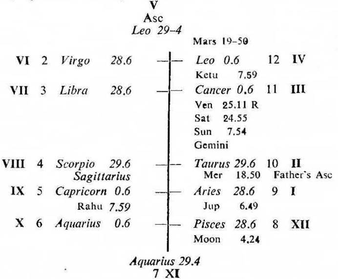
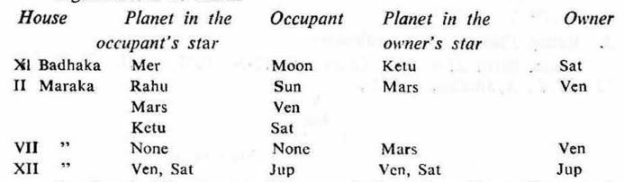
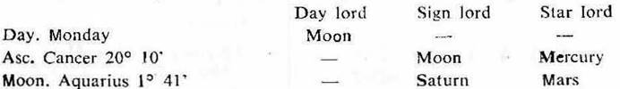
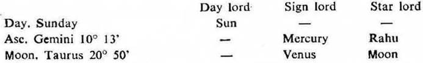
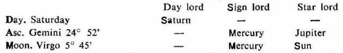

Male. Birth 22–6–1916 Thursday; 12–3–0 P.M. I.S.T; 23° N 2', 72° E 35'; Ayanamsa 22° 35',

Elimination of Significators: If the birth horoscope or a horary map indicates more than three or four significators regarding the matter to be judged, unimportant significators may be eliminated with the aid of the ruling planets.
Note the ruling planets of the moment when you begin to analyse and judge the horoscope.
The common planets between the significators (of the matter to be judged) and the ruling planets may be considered as the final significators and the rest may be eliminated
Father’s death : In this birth horoscope we may judge the death of the native’s father. Consider the 9th house cusp Aries 28° 6′ as the Asc. for the father. For convenience the roman letters are given to each house counted from the 9th cusp. Now find out the significators of the badhaka and maraka houses for the father.
Significators of death

So the significators are Mercury, Rahu, Mars, Ketu, Venus and Saturn. Rahu in Capricorn represents Saturn.
Ruling planets at the time of judgment
This birth horoscope was taken up for analysis on 13–3–1972 Monday at 3–50 p.m. I.S.T., 23°N 2′, 72° E 35′.

Rahu in Capricorn represents Saturn. Ketu in Cancer represents Moon and as Ketu is aspected by Mars, it represents Mars. So take Rahu and Ketu in place of Moon, Mars and Saturn. Thus the ruling planets will be Mercury, Rahu and Ketu.
The common planets between the significators of death and the ruling planets are Mercury, Ketu and Rahu. So they may be considered as the final significators of death and the rest may be eliminated.
Joint Period. The native was born with balance of Saturn dasha 17Y 5M 23P. His father died during the joint period of Mercury (the period ruler), Ketu (the sub period ruler) and Rahu (the inter period ruler) on 1–11–1936.
Transit. On that day Sun was transitting in Libra 16° in the star of Rahu (the inter period ruler); Rahu in Sagittarius 3° 52′ in the star of Ketu(the sub period ruler) and Ketu in Gemini the sign owned by Mercury (the period ruler).
Conclusion. From the above it will be clear that the ruling planets at the moment of judgment agree or tally with the significators of the matter under judgment or consideration.
In this case the father of the native died at about 9.30 p.m. I.S.T. on Sunday 1–11–1936; 23°N 2′, 72°E 35′.
Ruling planets at the time of death

At this moment Ketu was in Gemini. So it represents Mercury. Hence the ruling planets are Mercury, Rahu, Ketu, Venus, Sun and Moon.
Out of them Mercury, Ketu and Rahu are the significators of death during whose joint period the event of death occurred. Thus it may be said that the ruling planets at the time of event will tally or agree with the significators of that event.
From the above it may also be concluded that the ruling planets at the time of event will be the same as at the time of judgment.
(a) Example birth horoscope No. 1: The native of this horoscope came in contact with one genius friend for the first time on 17–10–1973 during the joint period of Rahu, Rahu (the period and sub period ruler) and Saturn (the inter period ruler).
(b) Ruling planets at the birth of the friend
This friend was born on 26–7–1925 at about 5H 2M A.M. I.S.T. before Sun rise on Sunday (i.e. Saturday); 22°N 41′, 72°E 55′.

At the moment of birth Rahu in Cancer was in conj. with Sun and aspected by Saturn in Libra. So Rahu represents both Sun and Saturn. Ketu is in Capricorn and aspected by Sun. So Ketu also represents both Sun and Saturn. Hence the ruling planets are Sun, Mercury, Jupiter, Saturn, Rahu and Ketu. Out of them Rahu and Saturn agree or tally with the joint period rulers in the native’s horoscope.
Hence it may be said that the ruling planets at the moment of birth of your married partner or your child or your friend or your business partner etc., will agree with your joint period rulers (i.e. the period, sub period and inter period rulers) during which you got married or you got a child or you met a friend for the first time or you joined in the partnership business.
These ruling planets may either be in the star or sub of, or be in conj. or aspect with the joint period rulers in your horoscope.
If the ruling planets of one be the significators of 6, 8 or 12 and not of 1, 5 or 11 in the horoscope of the other, then during the period of the significators of 6, 8 or 12, the latter will not feel happy with the former. But during the period of the significators of 1, 5 or 11, the latter will feel amicable with the former.
In this case the friend’s ruling planets e.g. Rahu and Saturn become the significators of 6 and 8 in the native’s horoscope; while the remaining ruling planets are not so.
The native was running the joint period of Rahu, Rahu and Saturn from 18–9–1973 to 22–2–1974. So in February 1974 an atmosphere of ill feeling between the two was created.
But the joint period of Rahu, Rahu and Mercury (the significator of 1) commenced on 22–2–1974 and subsequently amicability was restored.